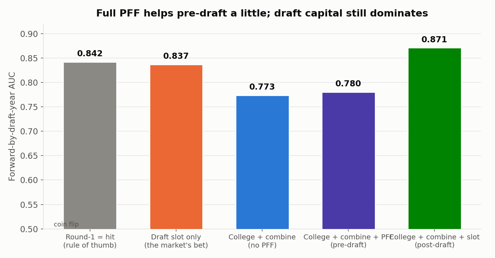
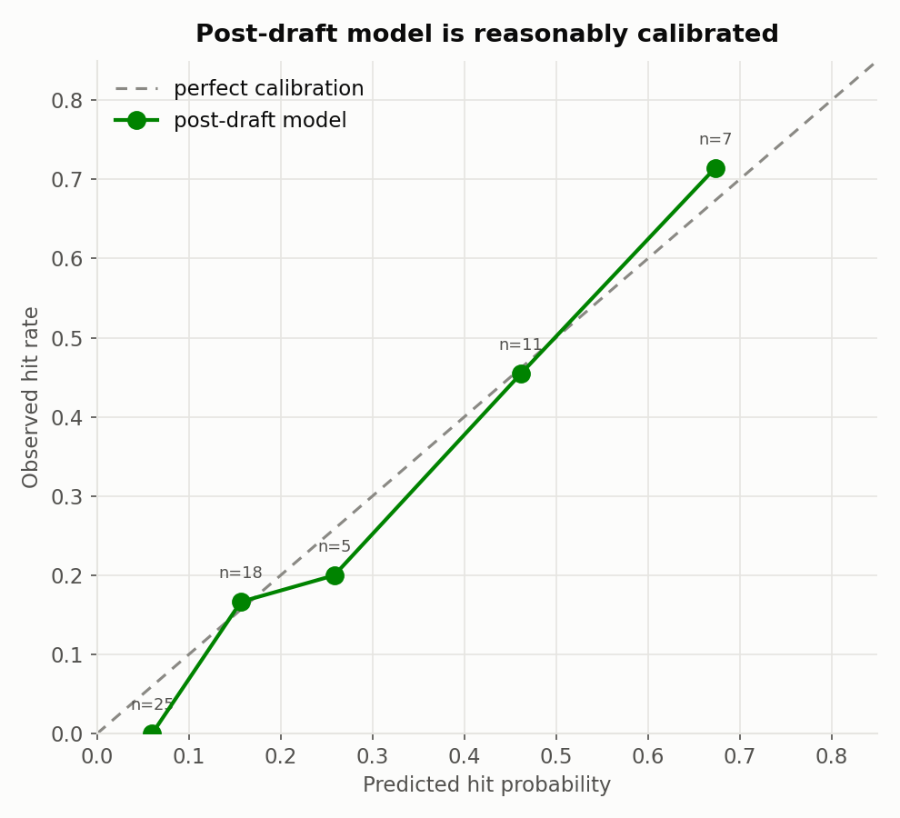
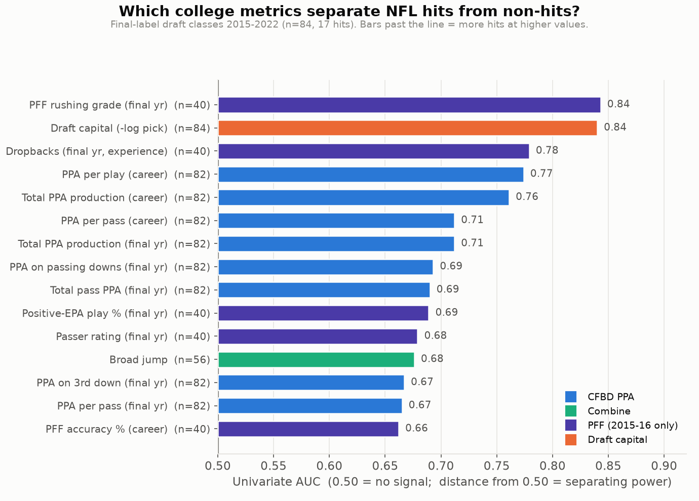

Projection board
NFL QB Projection Board
| Rank | Indicators | ||||||
|---|---|---|---|---|---|---|---|
| Loading projection board... | |||||||
Model validation
College data nearly matches the draft market. Together, they beat it.


Success signals
Production, draft capital, and explosiveness carry the signal.

Historical check
Top historical pre-draft model scores
Artifacts